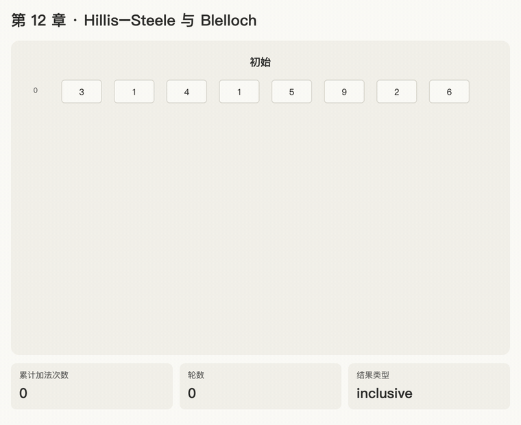

第 12 章 · 前缀和 scan：每个位置都要"前面所有数的和"
本章回答：前缀和看起来每一步都依赖上一步，怎么并行？Hillis–Steele 和 Blelloch 两种算法差在哪？block 内用 shuffle 怎么做？跨 block 的 scan 为什么麻烦？scan 在 AI kernel 里用在哪？
讲解日期：2026-11-14 · 上一章：第 11 章 warp shuffle 与原子操作 · 下一章：第 13 章 SGEMM ①
对应原文：Oxford lec4 第 20–33 页（materials/text/oxford-lec4.txt第 413–650 行：定义、局部 scan 两个版本、全局 scan 两种做法）；PG §4.4.6.2 Scans（text/cuda-programming-guide.txt第 15546–15563 行，cooperative groups 的 scan）；PMPP 第 5 版 ch.11 Prefix sum；Stanford CS149 asst3（courses/stanford-cs149/asst3/）本章缩写：CS149 = Stanford 并行计算课程编号 · CUB = CUDA UnBound（CCCL 里的块级 / warp 级原语库）
讲解
第一步：scan 是什么（2026-11-14）
Oxford lec4 第 20 页的定义：输入 \(u_0, u_1, \dots\)，输出
- inclusive scan（包含式）：\(v_j = \sum_{i \le j} u_i\)——包括自己；
- exclusive scan（不包含式）：\(v_j = \sum_{i < j} u_i\)——不包括自己，\(v_0 = 0\)。
| 输入 | 3 | 1 | 4 | 1 | 5 | 9 | 2 | 6 |
|---|---|---|---|---|---|---|---|---|
| inclusive | 3 | 4 | 8 | 9 | 14 | 23 | 25 | 31 |
| exclusive | 0 | 3 | 4 | 8 | 9 | 14 | 23 | 25 |
它有什么用？ 一个典型场景是并行地决定"我该写到哪"：每个线程要输出不定个数的结果（比如过滤：满足条件的元素才输出），先让每个线程报出"我要写几个"，对这些数做 exclusive scan，得到的就是每个线程的写入起点。排序（radix sort）、稀疏矩阵、流压缩、MoE 里按专家把 token 分组（统计每个专家几个 token → scan 得到每组起点）都靠它。Mamba 一类状态空间模型的并行训练也是一种（广义的）scan。
第二步：Hillis–Steele——每轮看得更远（2026-11-14）
顺序算法 \(v_j = v_{j-1} + u_j\) 每步依赖上一步，看似没法并行。换个思路（Oxford lec4 第 23 页，version 1）：
- 第 1 轮：每个位置加上左边隔 1 个的数 → 每个位置有了"自己 + 左边 1 个"的和；
- 第 2 轮：加上左边隔 2 个的数 → "自己 + 左边 3 个"；
- 第 3 轮：加上左边隔 4 个的数 → "自己 + 左边 7 个"；
- ……第 n 轮后，每个位置是"自己 + 左边 \(2^n - 1\) 个"。\(\log_2 N\) 轮后全部到齐。
数字演示（同一组数据）：
| 3 | 1 | 4 | 1 | 5 | 9 | 2 | 6 | |
|---|---|---|---|---|---|---|---|---|
| d = 1 | 3 | 4 | 5 | 5 | 6 | 14 | 11 | 8 |
| d = 2 | 3 | 4 | 8 | 9 | 11 | 19 | 17 | 22 |
| d = 4 | 3 | 4 | 8 | 9 | 14 | 23 | 25 | 31 |
Oxford 的代码：
for (int d = 1; d < blockDim.x; d = 2 * d) {
__syncthreads();
float temp2 = (tid >= d) ? temp[tid - d] : 0; // 先读
__syncthreads(); // 所有人都读完
temp[tid] += temp2; // 再写
}
注意两个 __syncthreads()：第一个保证上一轮都写完了，第二个保证这一轮大家都读完旧值才开始覆盖（第 7 章的"读完再覆盖也要等"）。Giles 教授在第 25 页自嘲："我最常犯的 CUDA 错误就是该写 __syncthreads() 的地方没写。"
代价：每轮几乎所有线程都在加，\(\log_2 N\) 轮共约 \(N \log_2 N\) 次加法——比顺序算法的 \(N - 1\) 次多。这叫不是 work-efficient（工作量不最优）。
第三步：Blelloch——先上树、再下树（2026-11-14）
Blelloch 的算法（PMPP ch.11 有详解）分两趟，总加法次数约 \(2N\)，是 work-efficient 的：
- 上扫（up-sweep / reduce）：就是第 10 章的树形归约，但保留中间结果：每个父节点存左右子树的和；
- 下扫（down-sweep）：根置 0，往下走：每个节点把自己的值传给左孩子，把"自己 + 左孩子原来的和"传给右孩子。
走完得到 exclusive scan。轮数是 \(2\log_2 N\)，比 Hillis–Steele 多一倍，但每轮干活的线程越来越少（或越来越多），总工作量小得多。
| 算法 | 轮数 | 总加法 | 适合 |
|---|---|---|---|
| Hillis–Steele | \(\log_2 N\) | \(\approx N \log_2 N\) | 线程多、N 小（如一个 warp 内） |
| Blelloch | \(2 \log_2 N\) | \(\approx 2N\) | N 大、计算资源紧 |
第四步：block 内用 shuffle 分三层（2026-11-14）
Oxford 第 26–28 页的 version 2，和上一章归约的三层结构一样：
- warp 内：用
__shfl_up_sync做 Hillis–Steele（32 个数 5 步，寄存器里完成）：
cpp
for (int d = 1; d < 32; d *= 2) {
float t = __shfl_up_sync(0xffffffff, v, d);
if (lane >= d) v += t;
}
2. warp 之间：每个 warp 的最后一个 lane（31）把本 warp 的总和写进 __shared__ float ws[32]，同步，第 0 个 warp 对这最多 32 个数再做一次 shuffle scan；
3. 加回去：每个线程加上"前面所有 warp 的总和" ws[warp - 1]。
第五步：跨 block 的 scan（2026-11-14）
一个 block 只能 scan 几千个数。1 亿个数要很多 block，而每个 block 都需要前面所有 block 的总和——这正撞上第 2 章的规矩：block 不能等别的 block。
Oxford 第 29–33 页给了两种办法：
- 三段式（scan-then-propagate）：kernel ① 每个 block 做局部 scan，并写出本 block 的总和；kernel ② 对这些 block 总和做 scan（block 少，一个 block 就够）；kernel ③ 每个 block 把"前面 block 的总和"加到自己的每个元素上。三次 kernel、数据读写约 3 遍。
- 单趟（decoupled look-back，现代 CUB 的做法）：一个 kernel 完成。为了不死锁，用原子计数器重新发 block 号（第一个开始跑的 block 拿到 0 号），保证"我前面的 block 一定已经开始跑了"；每个 block 算完局部总和后公布出去，后面的 block 往回看、把前面的累加起来。Oxford 第 30 页说的就是这个思路："use atomics to create an in-order block ID"。数据只读写一遍，接近 memory copy 的带宽。
工程上：直接用 CUB（cub::DeviceScan::InclusiveSum），或 Python 里 cuda.compute / torch.cumsum。自己写是为了理解。
动画演示：Hillis–Steele 与 Blelloch

可交互版：animations/12-scan.html。开关：算法（Hillis–Steele / Blelloch）。
怎么看：
- 8 个数一行，每轮画出"谁加到谁身上"的箭头，格子里更新成新值；
- Hillis–Steele：每轮箭头的跨度翻倍，3 轮出 inclusive 结果；
- Blelloch：先 3 轮上扫（像归约），根清零，再 3 轮下扫，出 exclusive 结果；
- 右下角累计加法次数，对比两种算法的总工作量。
练习与作答记录
题 1：对 [2, 0, 3, 1, 4, 1, 5, 2] 手算 Hillis–Steele 的每一轮，写出 inclusive 和 exclusive 结果。
作答：（待作答）
题 2：Oxford 的 Hillis–Steele 代码里为什么需要两个 __syncthreads()？去掉第二个会出现什么错误？用一个具体的线程举例。
作答：（待作答）
题 3：过滤（stream compaction）：1 亿个数里只保留正数，输出到一个紧凑的新数组。说说怎么用 exclusive scan 让每个线程知道自己该写到输出数组的哪个位置。
作答：（待作答）
口诀
scan：每个位置要前面所有数的和；inclusive 带自己，exclusive 不带；
Hillis–Steele 每轮看远一倍：log N 轮，N log N 次加，适合 warp 里；
Blelloch 先上树后下树：2 log N 轮，2N 次加，省工作量；
读完再写，两道栅栏；
跨 block：三段式最稳，单趟靠原子发号 + 往回看，生产用 CUB。
本章复习卡片
- C28（inclusive / exclusive scan 定义；scan 的用途：并行决定写入位置）
- C29（Hillis–Steele vs Blelloch：轮数与总工作量）
附录 · 延伸阅读
留给以后深入学习用，不影响本章主线。★ 是建议先读的。
推荐阅读
| 读什么 | 读哪里 | 读它为了什么 |
|---|---|---|
| ★ Oxford lec4 第 20–33 页 | text/oxford-lec4.txt 第 413–650 行 |
定义、两个局部 scan 版本、两种全局 scan |
| ★ PMPP 第 5 版 ch.11 | Prefix sum (scan) | Kogge–Stone（即 Hillis–Steele）、Brent–Kung、Blelloch 的工作量分析 |
| GPU Gems 3 第 39 章「Parallel Prefix Sum (Scan) with CUDA」（Harris、Sengupta、Owens） | 在线（〔旧知〕） | Blelloch 算法的经典图解与 bank conflict 处理 |
| Merrill & Garland「Single-pass Parallel Prefix Scan with Decoupled Look-back」（2016） | 在线（〔旧知〕） | CUB 单趟 scan 的原始论文 |
| CS149 asst3 | courses/stanford-cs149/asst3/ 的 scan 部分 |
动手：自己实现 exclusive scan 和 find_repeats |
| Oxford prac8 | courses/oxford-cuda-giles/prac8/ |
scan 练习（scan_*_atomic.cu 是参考解，做完再看） |
| PG §4.4.6.2 | text/cuda-programming-guide.txt 第 15546–15563 行 |
cooperative groups 现成的 inclusive_scan / exclusive_scan |
数学原理
- Hillis–Steele 正确性：归纳——第 \(k\) 轮（\(d = 2^{k-1}\)）后 \(v_j = \sum_{i=\max(0, j-2^k+1)}^{j} u_i\)；\(2^k \ge N\) 时即为前缀和。
- 工作量：Hillis–Steele 第 \(k\) 轮有 \(N - 2^{k-1}\) 次加法，总和 \(N\log_2 N - (N - 1)\)；Blelloch 上扫 \(N - 1\) 次、下扫 \(N - 1\) 次。
- exclusive 与 inclusive 互换：exclusive = inclusive 右移一位、首位补 0；inclusive = exclusive + 原值。
公式 / 代码清单
| 名称 | 代码 |
|---|---|
| warp 内 inclusive scan | for (d = 1; d < 32; d <<= 1) { t = __shfl_up_sync(~0u, v, d); if (lane >= d) v += t; } |
| 由 inclusive 得 exclusive | ex = inc - x; |
| 库函数 | cub::DeviceScan::InclusiveSum(...)、cub::BlockScan、torch.cumsum |
| 用途模板 | pos = exclusive_scan(count)；线程把结果写到 out[pos[t] .. pos[t] + count[t]) |
代码对照：把本章的数字用代码算一遍
用 NumPy 在 CPU 上模拟同样的规则。代码在仓库本地
cuda-programming/solutions/chapter-code/ch12_scan.py，配套测试tests/test_ch07_12.py；同一章的 notebook：notebooks/ch12_scan.ipynb（讲解和代码放在一起，一格一格边读边跑）。Mac 上直接能跑，不需要 GPU：
bash cd cuda-programming/solutions/chapter-code uv run python ch12_scan.py # 一步一步打印 uv run pytest tests/test_ch07_12.py
讲义 ↔ 代码：
| 讲义 | 公式 / 说法 | 写法 | 跑出来 |
|---|---|---|---|
| 第一步 定义 | inclusive / exclusive | inclusive(v)、exclusive(v) |
3 4 8 9 14 23 25 31 / 0 3 4 8 9 14 23 25 |
| 第二步 Hillis–Steele | 每轮加左边隔 d 个 | hillis_steele(v) |
三轮结果同讲义表；17 次加法 |
| 第三步 Blelloch | 上扫 + 下扫 | blelloch(v) |
exclusive 结果；14 次加法 |
| 第四步 warp 内 scan | __shfl_up_sync |
warp_scan(np.array(v)) |
= inclusive |
| 第五步 三段式 | 局部 scan → 总和 scan → 加回去 | three_phase_scan(big, 8) |
和 np.cumsum 一样 |
关键几行：
old = temp[:] # 第一道栅栏后：全员先读旧值
temp = [old[t] + (old[t - d] if t >= d else 0) # 第二道栅栏后：再写
for t in range(len(old))]
local = np.cumsum(parts, axis=1) # kernel ①：每个 block 局部 scan
offsets = exclusive(local[:, -1]) # kernel ②：block 总和做 exclusive scan
out = local + offsets[:, None] # kernel ③：加回前面 block 的总和
代码里才看得到的 2 件事：
old = temp[:]就是"读完再写"：Hillis–Steele 要先把整行旧值拷一份再算新值；如果原地改，后面的线程会读到这一轮已经改过的数——讲义里第二道__syncthreads()防的就是这个。- 加法次数按真正做了加法的线程数：Hillis–Steele 第 d 轮只有 t ≥ d 的线程在加，8 个数是 7 + 6 + 4 = 17 次。
自己改一改（不影响练习答案）：
- 把输入换成 16 个数，比较 Hillis–Steele 和 Blelloch 的加法次数，看差距怎么随 N 变大。
- 把
three_phase_scan的 block 大小换成 4、16。